D0
Utorok · 14.7.2026 · 09:00
Štart z Trenčína
Naložené auto, deti pripútané, káva v termoske. Pred nami ~9 hodín cesty k prvej zastávke v Obertilliachu — cez Bratislavu, Viedeň, Salzburg, Lienz.
Rodinný cestovateľský prístrojový panel · Trenčín → Rakúsko → Dolomity → Benátsko. 9 dní, 1 344 € ubytovanie, neobmedzene spomienok.
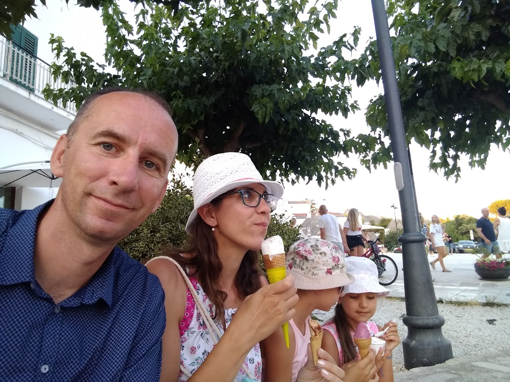
Rodina.jpg do tohto priečinkaKlikni na ktorýkoľvek bod — automaticky odskrolujem na detail daného dňa.
Naložené auto, deti pripútané, káva v termoske. Pred nami ~9 hodín cesty k prvej zastávke v Obertilliachu — cez Bratislavu, Viedeň, Salzburg, Lienz.

Weberstube Weberhaus Zollhaus Zollstöckl · Obertilliach 38, 9942 Obertilliach
14.7 · príchod od 14:00 → 15.7 · odchod 08:00–09:30
Pri návšteve Lago di Sorapis parkujeme tu. Od parkoviska je krátky presun k trailheadu (Passo delle Tre Croci) autom alebo lokálnym busom.
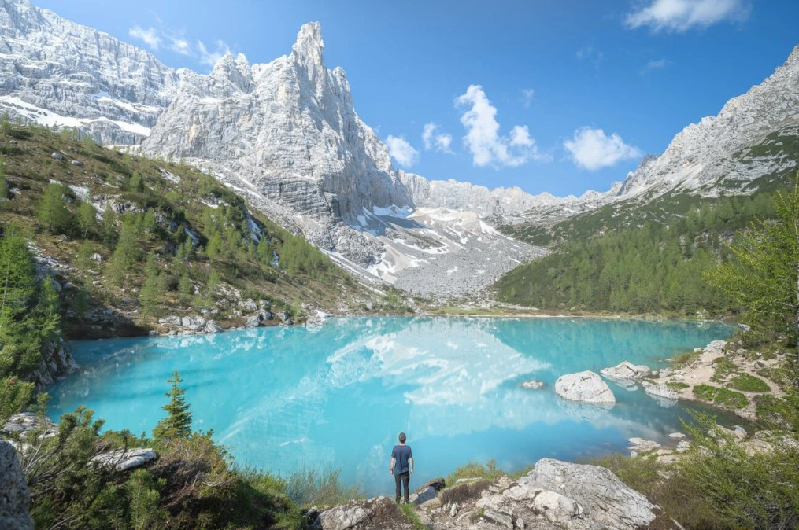
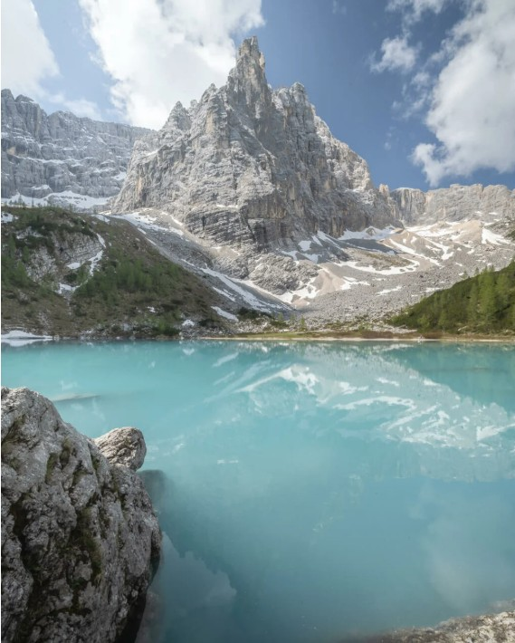
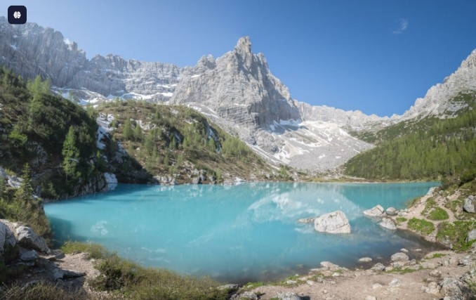
Ráno odchod z Obertilliachu priamo k jazeru. Cez Cortinu na Passo delle Tre Croci, parkovanie pri otvorenom B&B, odtiaľ chodník. Večer transfer na Pelmo Mountain Lodge (check-in od 16:00).
Jeden z najfotogenickejších priesmykov Álp. Z Pelmo Mountain Lodge ~35 km / 50 min. Z parkoviska 360° výhľad bez túry, voliteľná 3–4 h prechádzka.
Historický múr Muraglia di Giau pri ceste. Večer návrat do Pelmo Lodge.
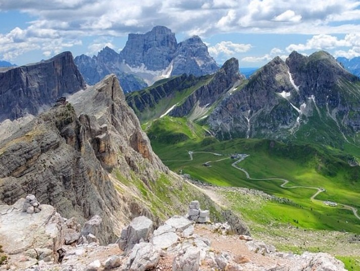
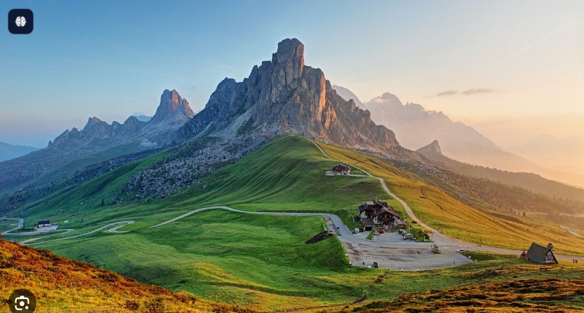
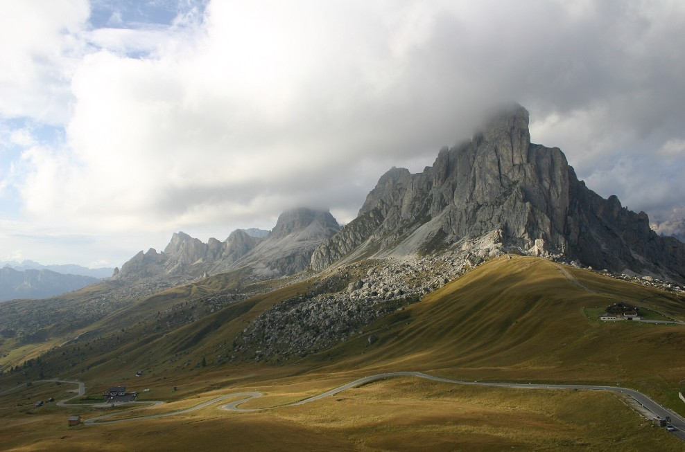
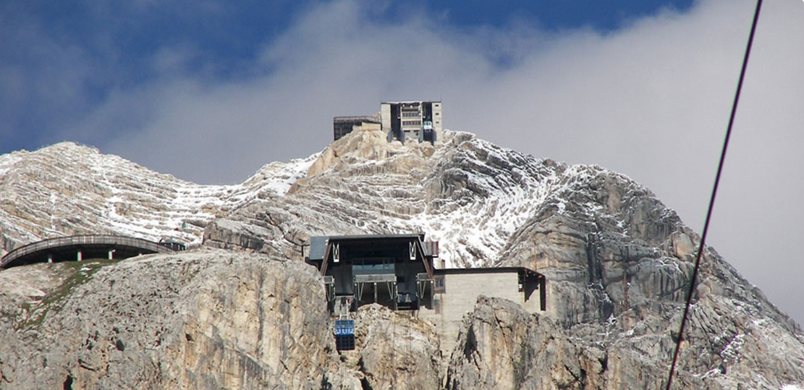
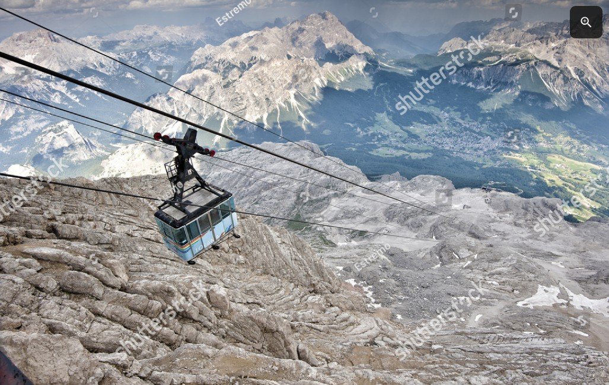
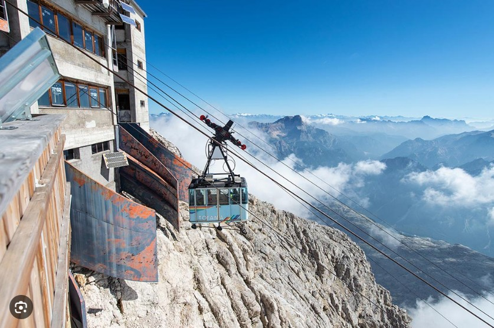
Lanovka Freccia nel Cielo v 3 etapách až nad mraky. Cena ~35 € / os. Po návrate odchod priamo do Treviso (~2 h jazdy).
Parkovanie: Pian da Lago (cca 1 km od centra Cortiny) je bezplatné s pravidelným shuttlom do centra k spodnej stanici lanovky.
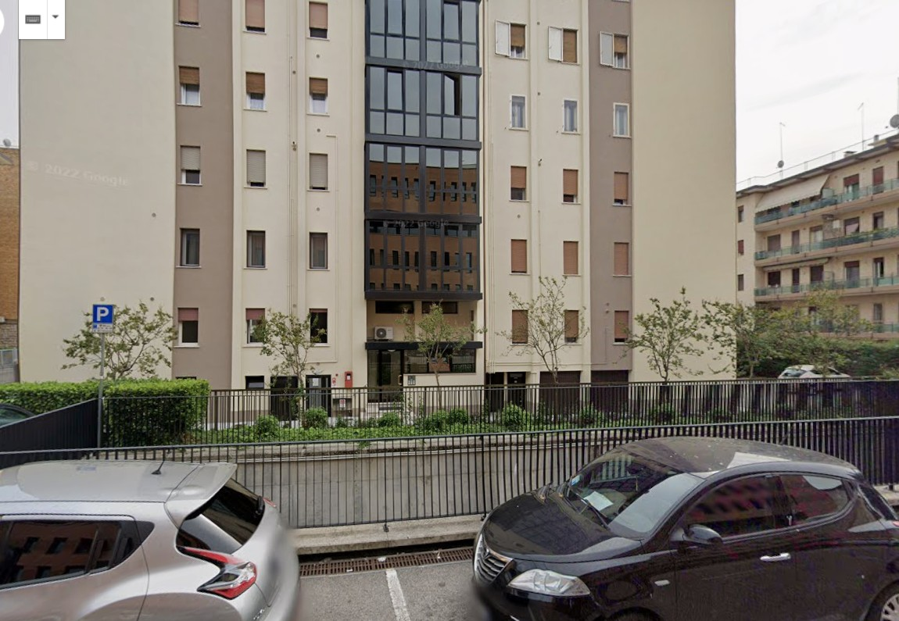
17.7 → 22.7 · check-in 15:00, check-out 10:00
1,7 km od železničnej stanice Treviso Centrale (~20–25 min pešo). Priame vlaky do Benátok 25 min, 30+ spojov denne, 4–6 €.
Najdlhšia komerčná pláž v Európe (15 km). Plytký vstup ideálny pre deti. Pre rodinu (2+2) stačí 1 set: 1 slnečník + 2 ležadlá.
| Poloha | Pracovný deň | Víkend/sviatok |
|---|---|---|
| Zadné rady | 18 € | 21 € |
| Stred (5.–8. rad) | 20,50 € | 24 € |
| 1. rad pri mori | 28 € | 32 € |
Veľká časť pláží voľne prístupná — vlastný slnečník zadarmo. Set ležadiel mimo 1. rady 20–35 €, prémiový pri mori 30–50 €.
Pre rodinu odporúčam:
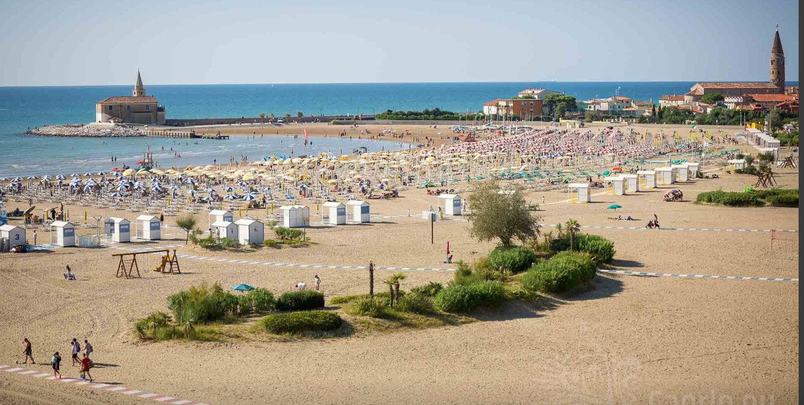
Vlakom Treviso Centrale → Venezia Santa Lucia, 25 min, 30+ spojov, 4–6 €.
Celá pešia trasaRezerva na prechádzku centrom Treviso, druhé kolo Caorle/Jesolo alebo „len nič".
Odchod z Treviso do 10:00. Padova je možná ako predposledný deň alebo prvá zastávka po ceste.